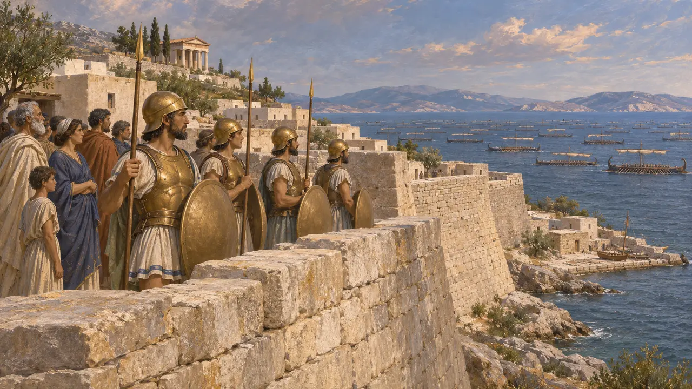
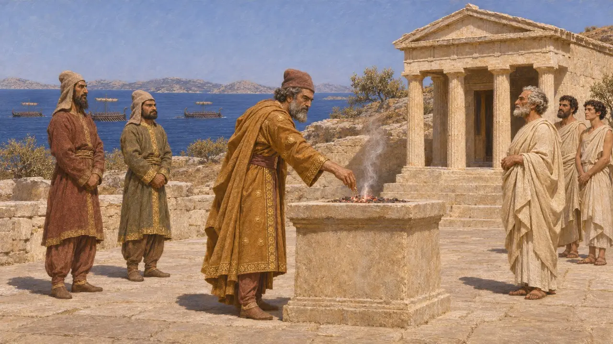
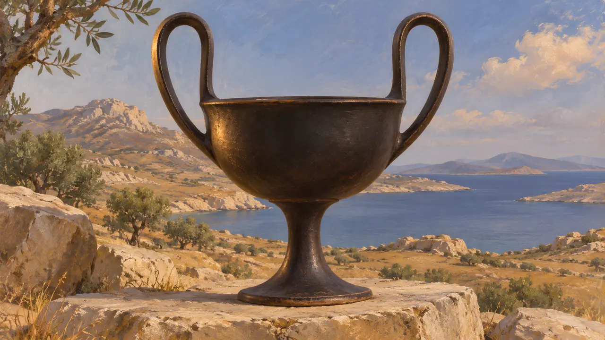

Les insulaires
Les Grecs des Cyclades, les îles du centre de la mer Égée, VIe-Ve siècle av. J.-C.
Dans le jeu : Niveau 8 : La Baie de Marathon
Les Cyclades forment l'anneau d'îles qui entoure Délos, au centre de la mer Égée. Naxos, la plus grande et la plus riche, les dirigeait à la fin du VIe siècle av. J.-C. C'est là que commença en 499 av. J.-C. la première attaque perse contre la Grèce, et en 490 av. J.-C. Datis s'empara des îles en route vers Érétrie et Marathon.
Dans le jeu : Les îles sont un partenaire commercial à Marathon, sous leur propre emblème à côté de leur nom.

Naxos et le siège de 499 av. J.-C.
Récit antiqueHérodote dit que Naxos comptait alors 8 000 hommes en armes et était la plus forte des îles. Des nobles naxiens exilés demandèrent l'aide d'Aristagoras de Milet, qui persuada Artapherne d'envoyer 200 navires sous Mégabatès. Le siège de quatre mois échoua, et Aristagoras, craignant pour sa position, lança la révolte de l'Ionie.
Herodotus 5.28-34

Datis parmi les îles
Récit antiqueEn 490 av. J.-C., la flotte du Roi traversa l'Égée en droite ligne, d'île en île. Selon Hérodote, les Naxiens s'enfuirent dans les collines et les Perses incendièrent leur ville et leurs temples, mais Datis épargna Délos et y brûla de l'encens en l'honneur d'Apollon. Les autres îles donnèrent des otages et des hommes.
Herodotus 6.95-99

L'emblème à côté de son nom
Dans les sourcesLe jeu donne aux îles le kantharos, une coupe à vin à deux anses, tiré des monnaies de Naxos : l'île de Dionysos l'a frappé sur son argent dès le VIe siècle. Il représente toutes les îles, qui n'avaient pas d'emblème commun.
Head, Historia Numorum, Cyclades
Sources
- Herodotus 5.28-34, 6.95-99
- Head, Historia Numorum, Cyclades
- P. Briant, From Cyrus to Alexander, 2002